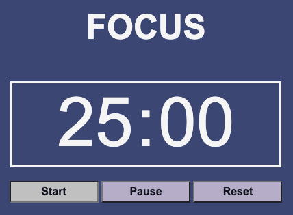
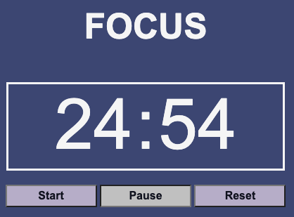
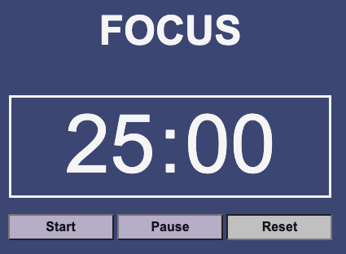
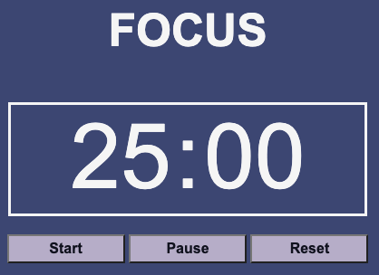
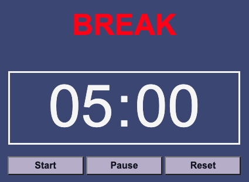

A pomodoro clock is a time management tool that breaks work into intervals, usually 25 minutes long, separated by breaks. During the 25 minutes you are supposed to concentrate solely on your work. This tool is designed to aid users in combatting multi-tasking and improve concentration.
This website contains a modified pomodoro clock. The work and break times are preset and there is no extended break time. You can complete as many pomodoros (focus sessions) as you would like. These are the general steps for using the pomodoro clock:
1. Choose a specific task
2. Start the clock.
3. Work on the chosen task.
4. Stop working when the focus time is over and take a brief break.
5. Repeat these steps until you decide you would like to stop working or you have completed your chosen task.
1. Click on the "Start" button to start the pomodoro clock.
2. Click on the "Pause" button to pause the pomodoro clock.
3. Click on the "Reset" button to reset the pomodoro clock back to 25 minutes of "Focus" Time
The header will oscillate between FOCUS and BREAK to indicate which clock is currently active.
 The FOCUS clock is set for 25 minutes and the BREAK clock is set for 5 minutes.
If you would like to finish the break earlier, clicking the "Reset" button will switch the BREAK clock to the FOCUS clock.